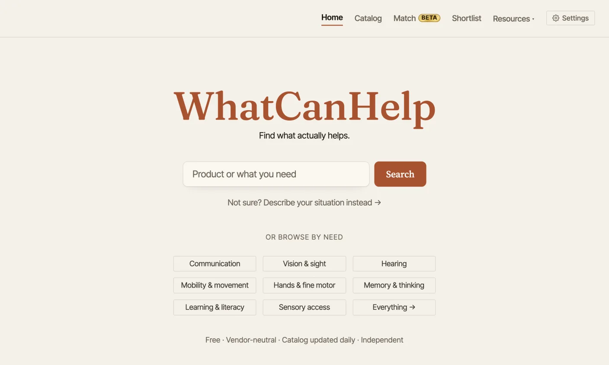
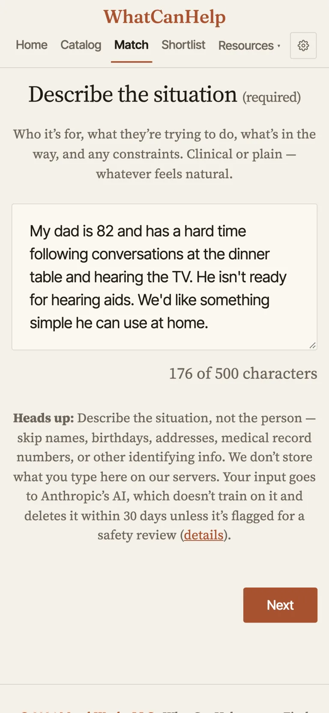
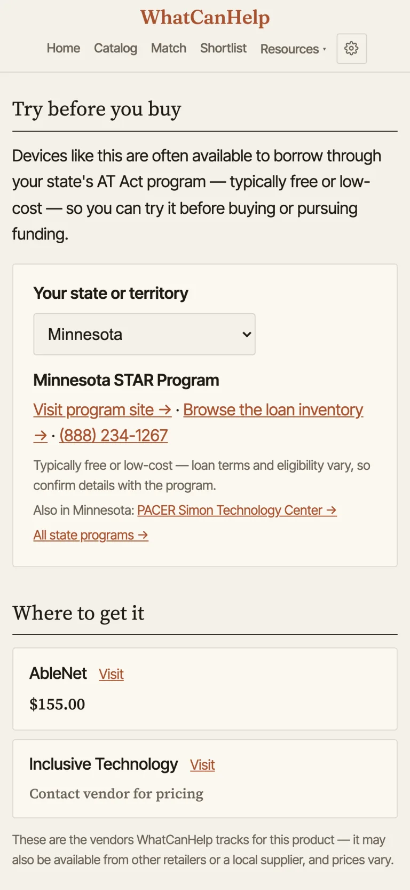
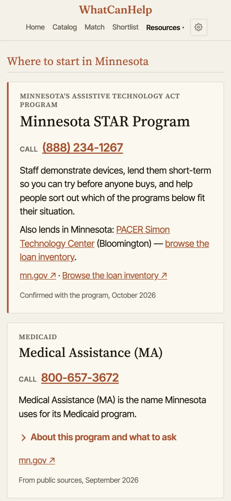
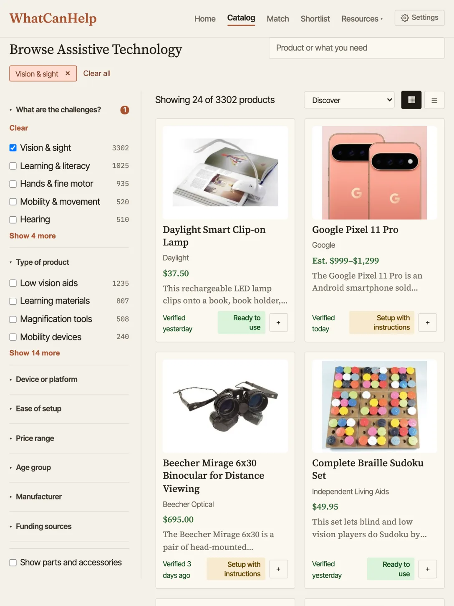
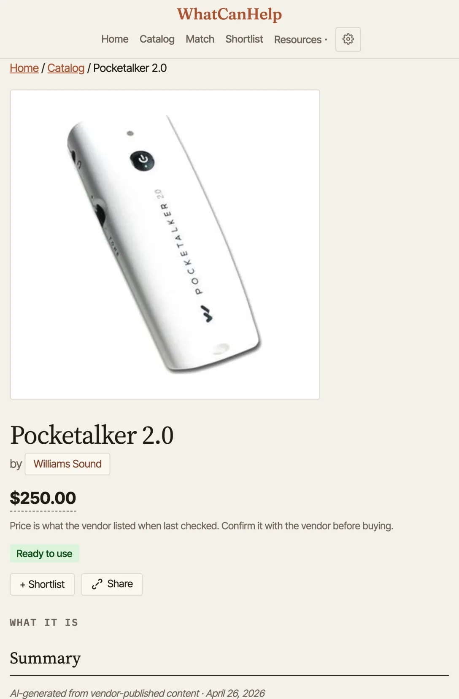
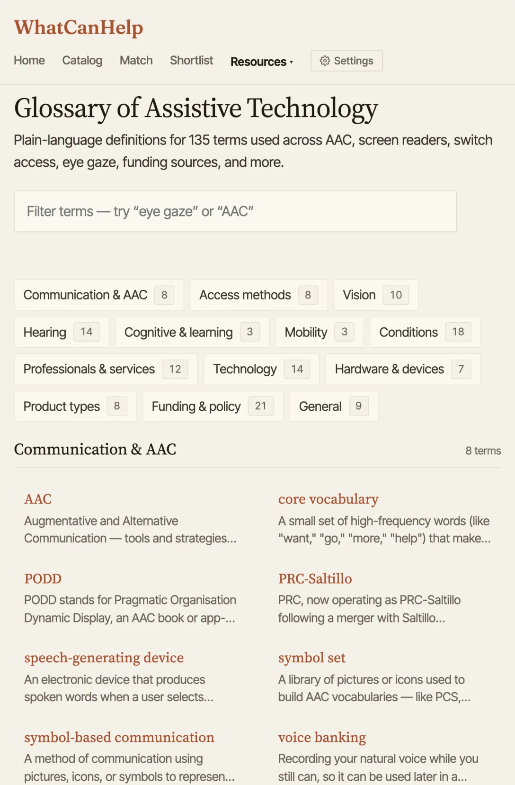
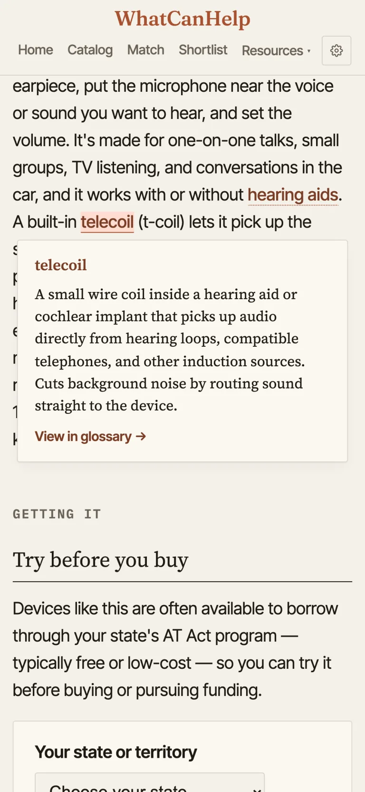
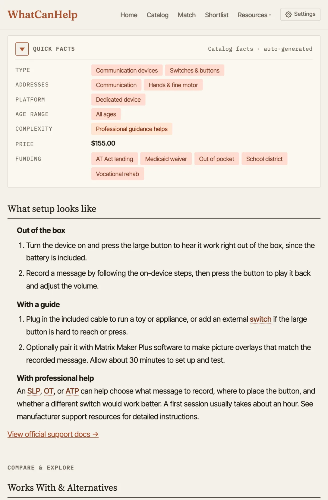
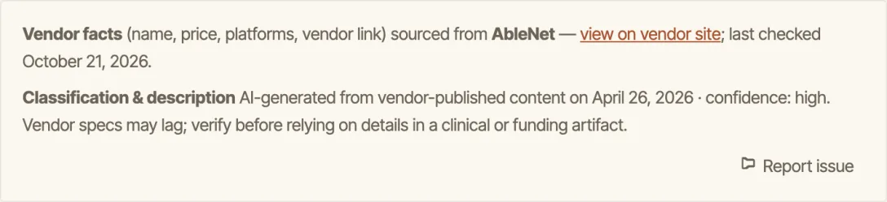

Slide 1 of 9: WhatCanHelp
On the slide: Finding assistive technology, what it costs, and how to pay for it. Jason Marsh. https://whatcanhelp.com. Scan to follow along.
Talking points: Alright, thanks for having me. My name is Jason Marsh, I'm a Director of Technology at the Lighthouse Center for Vital Living in Duluth. WhatCanHelp.com is a personal project, built on my own time. I started working on it because I know how hard it can be for individuals and families to know where to start when they could use some help. I've also aimed to make it useful to professionals, so that whoever may need help, the site can be a resource that points them in the right direction.
Slide 2 of 9: A free, current catalog of assistive technology.
On the slide: whatcanhelp.com


Talking points: The site is a free catalog of assistive technology, sourced from vendors across the internet. From the main page you can search for a product or for what you need. Further down, there's a set of buttons to browse the catalog by need. There are no ads, no affiliate links, and no accounts.
Slide 3 of 9: Not sure where to start? Match asks a few questions.
On the slide: whatcanhelp.com/intake



Talking points: If someone visits the site but doesn't know where to start, there's also a separate Match page that asks a few questions about the situation. In this hypothetical situation, a dad is 82, has trouble following conversations at dinner and hearing the TV, but he isn't quite ready for hearing aids. Match suggested trying the Response Personal Amplifier, a small pocket-sized amplifier that makes the voices and sounds around him louder. Zooming in on that result, you can see a plain-language description, a complexity rating, and the price.
Slide 4 of 9: Borrow before you buy, in every state.
On the slide: whatcanhelp.com/borrow




Talking points: One thing I've tried to do across the site is point people toward resources in their area. Product listings, for instance, suggest borrowing a device before buying it, and point them to resources in their area. Every state and territory is listed. Here it's set to Minnesota, so it shows STAR and PACER, with links to their lending libraries and contact information. Each state also has a where-to-start page for funding, which lists the programs that may help pay for technology and services.
Slide 5 of 9: More than 4,500 products, rechecked against vendor sites.
On the slide: whatcanhelp.com/browse


Talking points: To cover the catalog a bit: everything in it is browsable by need. This view is filtered to Mobility & Movement, which narrows the catalog to about 500 products. With the filter still on, you can see most of them are everyday things like utensils, shoe horns and canes, not just high-tech devices. Every product card also shows the maker, the price, and roughly what setup is like.
Slide 6 of 9: Every product gets a plain-language summary.



Talking points: Another thing I've tried to do is keep the site neutral. Vendor pages are understandably built to sell, so every product here gets a plain-language summary instead: what it is, how it helps, and how much setup it takes. Zooming in on the details of a product listing, you can see this one is the BIGmack by AbleNet, along with some extra information that may help. Over here is the summary of the BIGmack. It's rewritten to inform rather than sell: what it does and why it may help. It's written by AI from the vendor's own content, and labeled that way. You can also see the word switch has a dotted underline. That's the glossary.
Slide 7 of 9: 135 terms, explained where they appear.




Talking points: It explains industry jargon and acronyms: 135 terms in 13 groups, from AAC and access methods to funding and policy. On a product page, tapping an underlined term opens a pop-up, so you never leave the page.
Slide 8 of 9: Tagged by need, type, platform, age, complexity, price and funding.




Talking points: Each product is tagged across the same dimensions professionals tend to think in, so a search for a communication need finds communication-related products. Every listing also has a Quick Facts section you can expand. The funding entry, for instance, lists possible avenues for covering the cost of the device. Every page says where its facts came from, when they were last checked, and how confident the classification is, with a reminder to verify before clinical or funding use. There's also a Report issue button, so anyone using the site can send feedback, which helps keep things as accurate and useful as I can make them.
Slide 9 of 9: Questions?
On the slide: https://whatcanhelp.com and hello@whatcanhelp.com
Talking points: I'd love to hear what's missing or wrong, and I mean that. Email me anytime at hello@whatcanhelp.com. Happy to take questions.